Trusted by thousands of callers nationwide
Major Arcana Tarot Card Meanings - All 22 Cards Explained
The Major Arcana tarot card meanings are life told in pictures. These 22 cards reveal the big picture and the long-term direction of your path. Want the cards read for your situation? Every reader on our line is hand-vetted - connect in under 60 seconds, $1 for your first minute, hang up anytime.
- Hand-vetted readers
- Available 24/7
- Hang up anytime

What Is the Major Arcana?
The Major Arcana cards are a representation of life through pictures. The 22 cards represent situations we all face during our lifetime. Each card carries a specific message and gives a certain mindset to help a person in times of need. These cards reveal the big picture of a person's life and the long-term direction it is taking.
Major Arcana cards - also called Trump Cards - are made up of 22 cards. All of them are numbered apart from one card, The Fool. If a tarot reading is mostly comprised of Major Arcana cards, it usually means a person is going through events that will serve as major life lessons. If most of these cards are reversed in a reading, it means the person is ignoring, or not attentive enough to, those life lessons.
Call (888) 920-6662 - Intro rate $1/min
The 22 Major Arcana Cards
Tap any card for its full meaning - the symbolism, the upright message, the reversed message, and the advice it offers:
The cards are shown in their traditional order (0–21), the sequence of the Fool's Journey:
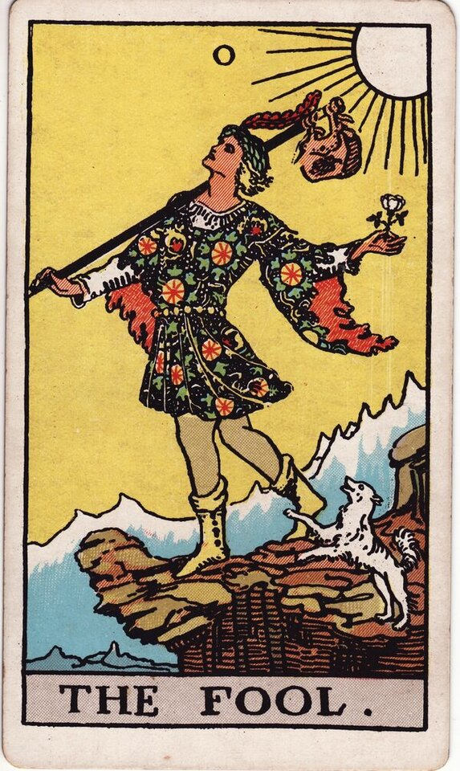
0 - The Fool
New beginnings, innocence, a leap of faith.
Meaning →1 - The Magician
Willpower, manifestation, having all you need.
Meaning →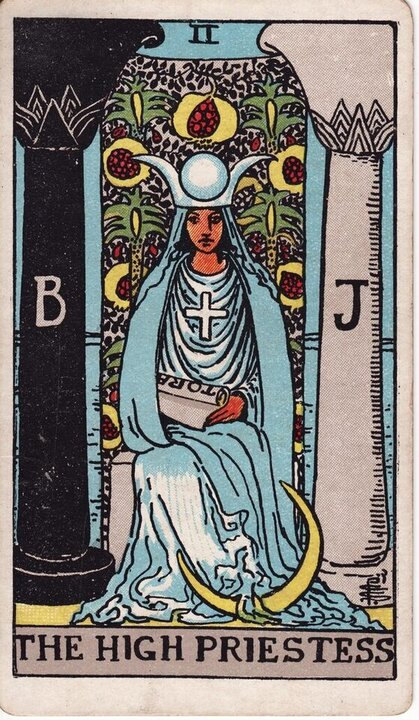
2 - The High Priestess
Intuition, mystery, inner knowing.
Meaning →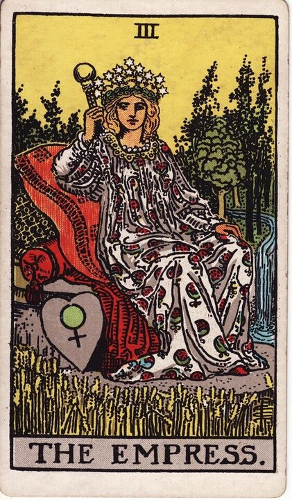
3 - The Empress
Abundance, nurturing, creativity, fertility.
Meaning →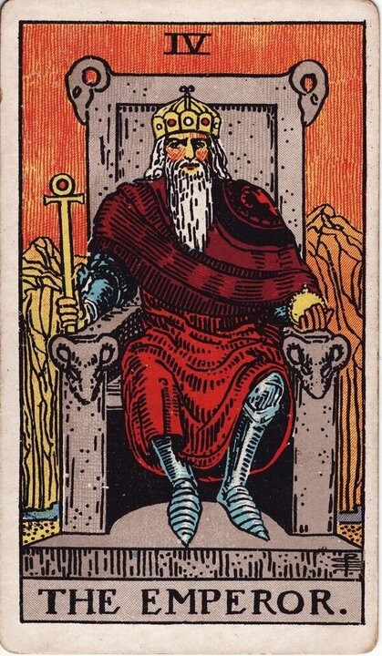
4 - The Emperor
Authority, structure, leadership, stability.
Meaning →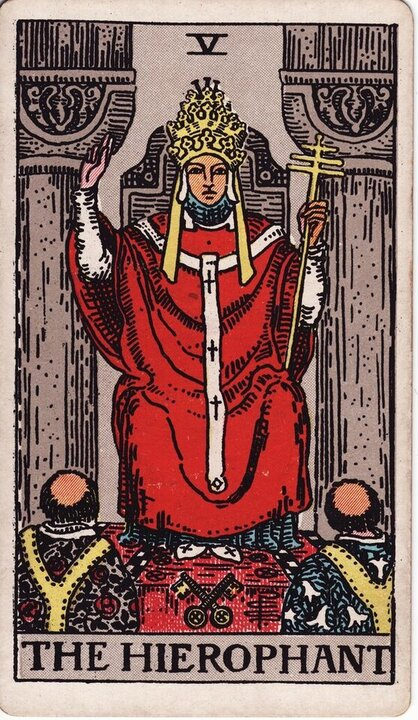
5 - The Hierophant
Tradition, guidance, established wisdom.
Meaning →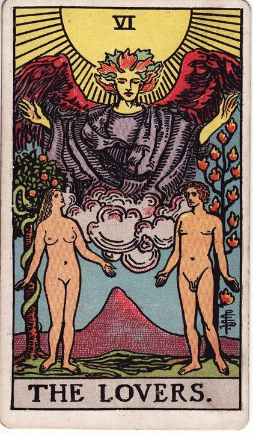
6 - The Lovers
Love, harmony, choices, alignment of values.
Meaning →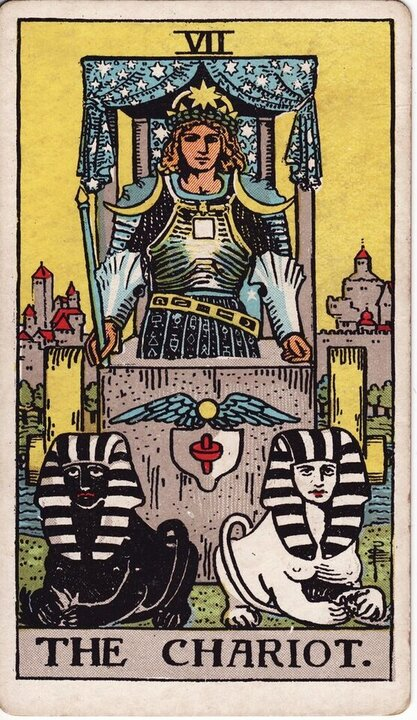
7 - The Chariot
Willpower, control, determination, victory.
Meaning →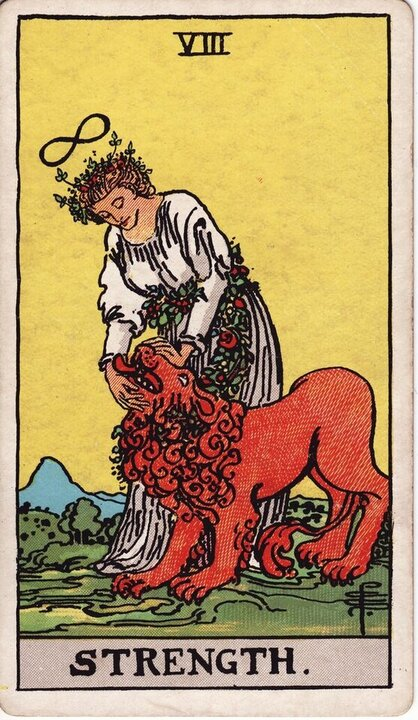
8 - Strength
Inner strength, courage, gentle control.
Meaning →
9 - The Hermit
Reflection, solitude, inner guidance.
Meaning →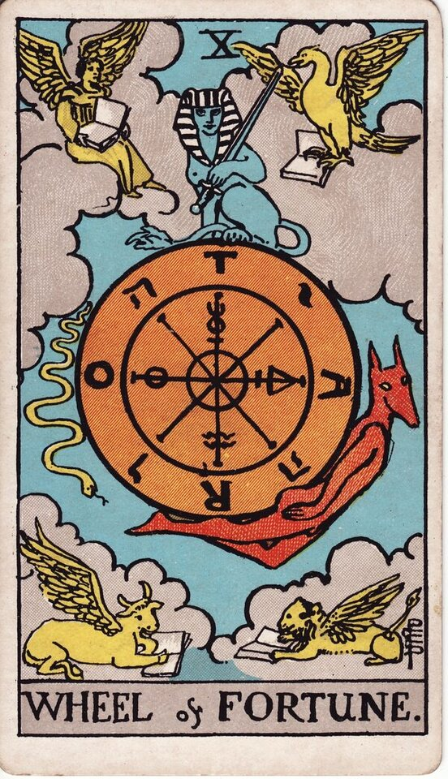
10 - Wheel of Fortune
Cycles, change, fate, turning points.
Meaning →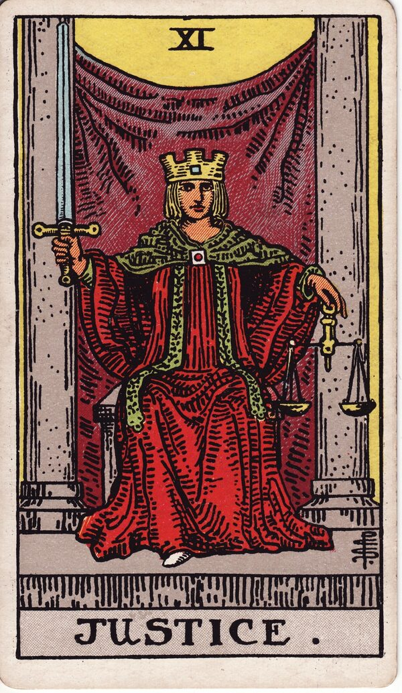
11 - Justice
Fairness, truth, cause and effect.
Meaning →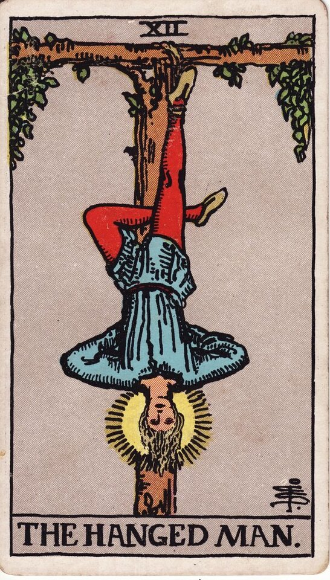
12 - The Hanged Man
Surrender, new perspective, pause.
Meaning →
13 - Death
Endings, transformation, moving on.
Meaning →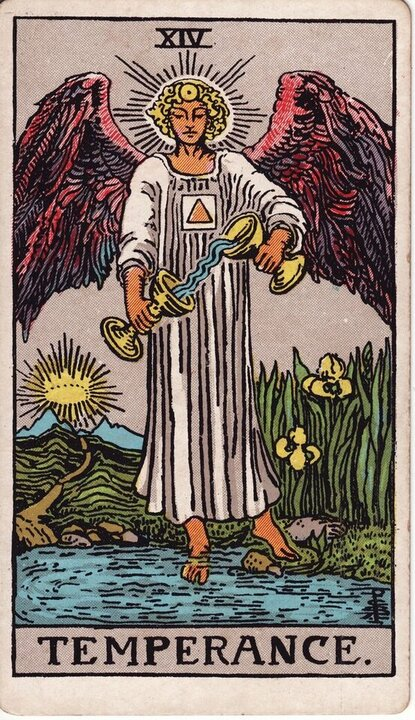
14 - Temperance
Balance, moderation, blending, patience.
Meaning →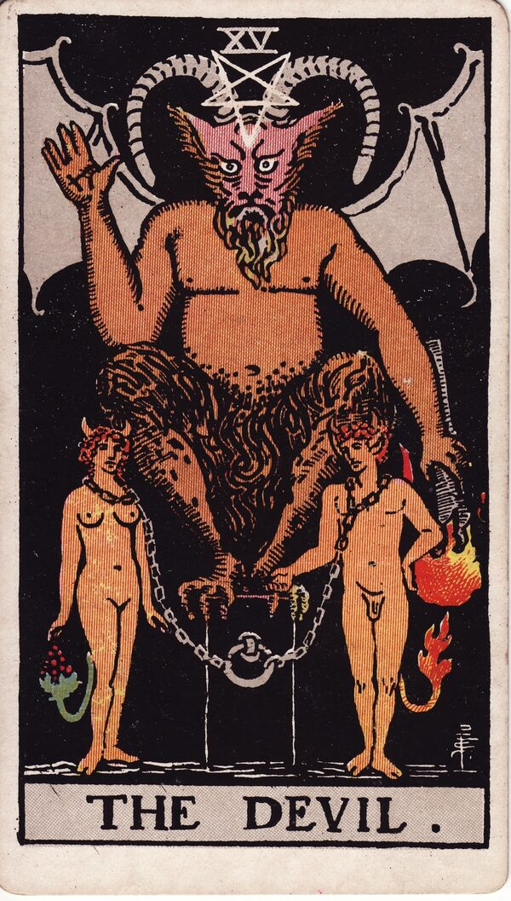
15 - The Devil
Attachment, addiction, breaking free.
Meaning →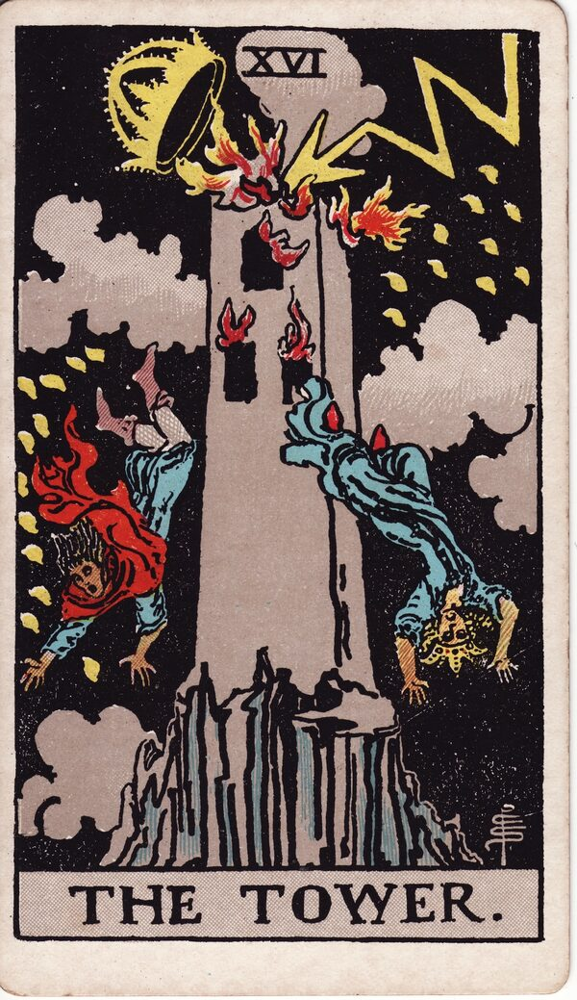
16 - The Tower
Sudden change, revelation, upheaval.
Meaning →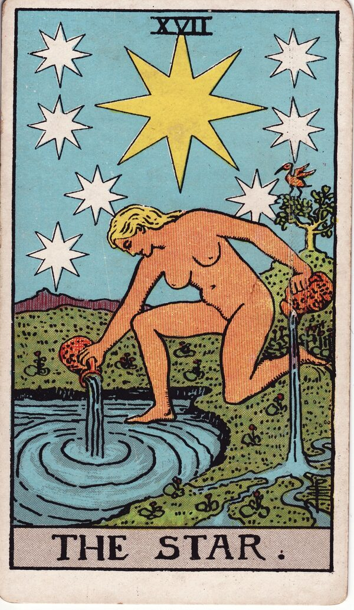
17 - The Star
Hope, renewal, faith, inspiration.
Meaning →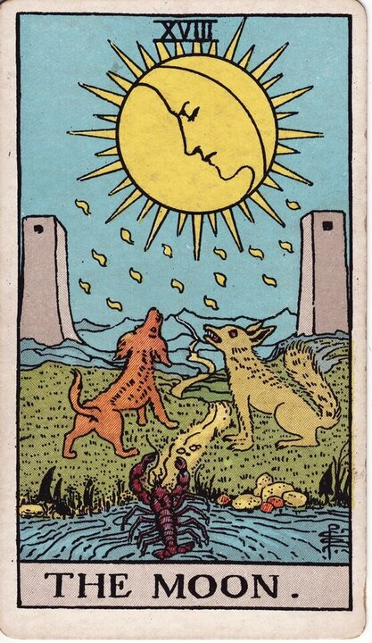
18 - The Moon
Intuition, dreams, the unconscious.
Meaning →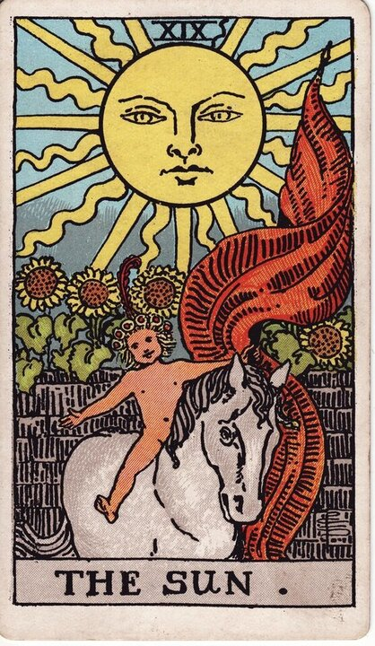
19 - The Sun
Optimism, success, joy, vitality.
Meaning →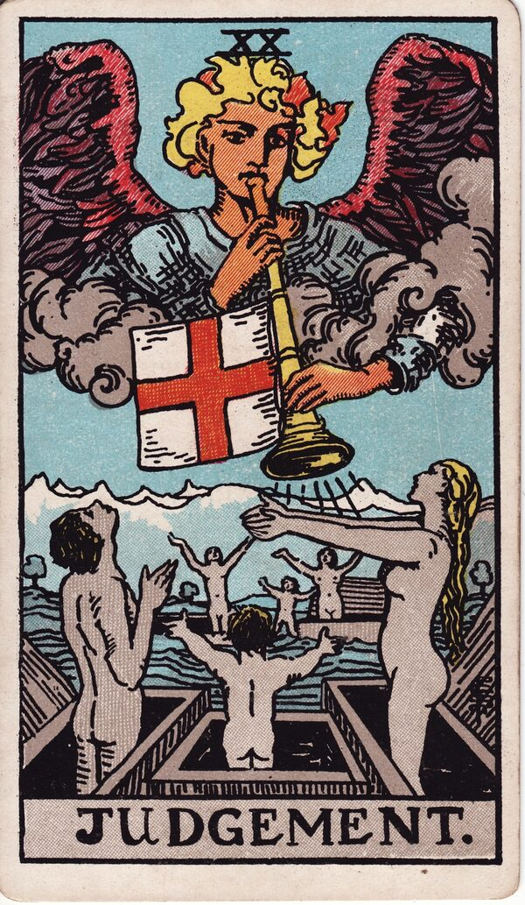
20 - Judgement
Awakening, reckoning, release of potential.
Meaning →
21 - The World
Completion, fulfillment, wholeness.
Meaning →
How to Read the Major Arcana
Each Major Arcana card has an upright message and a reversed one, and a skilled reader weaves them into a story rather than reading any single card in isolation. Position matters, the surrounding cards matter, and the question you bring matters most of all. The card meanings here are a guide; a live reading applies them to your situation, which is where they actually become useful. You can read more about the history and structure of the Major Arcana for background.
Major Arcana vs. Minor Arcana
A tarot deck has 78 cards. The 22 Major Arcana represent major life themes and turning points - the bigger forces shaping your path. The remaining 56 Minor Arcana cards cover the day-to-day details, split into four suits: Pentacles (money, work, home), Cups (emotions and relationships), Swords (thoughts, conflict, truth), and Wands (energy, drive, creativity). When the Major Arcana dominates a spread, the reading is about the big picture; when the Minor Arcana leads, it's about the everyday particulars. See the full Minor Arcana tarot card meanings, or explore a full phone tarot reading to see how they work together.
What Do I Do If I Keep Pulling the Same Major Arcana Card?
It usually means the lesson that card carries hasn't landed yet. A repeating card - especially reversed - is the deck underlining something you've been avoiding or not giving enough attention. Rather than decode it alone from a meanings list, that's exactly the moment a live reading helps: a hand-vetted reader can tell you why it keeps showing up for you specifically and what it's asking you to do. Browse every reading type on our phone psychic readings hub if you're not sure where to start.
Want the Cards Read for Your Life?
A meanings list is the map; a live reading is the territory. We'll connect you with the right hand-vetted tarot reader in under 60 seconds. $1/min first call · 15 minutes for $10 · hang up anytime · 100% satisfaction promise.
Call (888) 920-6662 NowWhat Callers Say About Their Tarot Reading
"Honestly? I didn't believe in this stuff - I assumed they just say whatever they want for the money. I was in a huge mess facing big decisions and booked a session expecting nothing. I was stunned. Everything she said was relevant and gave me real points. It changed my perspective on tarot completely."
"I book an hour twice a year and we look at my business landscape and ask specific questions. The reading has given me so much I could actually use - I write down every practical nugget of wisdom that comes out of it."
"I walked away speechless and full of awe - accurate, consistent, thorough but quick at the same time. Professional, generous, and clearly skilled at her craft. Mind-blowing."
"If you're thinking about booking a reading: do it. I've called when I wasn't sure what to do, when life was changing fast, and when I just needed guidance - and every time I got exactly what I needed. Nothing but clarity."
Explore every reading type on our phone psychic readings hub, or start a phone tarot reading now.
Major Arcana - Frequently Asked Questions
What is the Major Arcana?
The 22 tarot cards (Trump Cards) that represent the big situations and turning points everyone faces. Each carries a message about the long-term direction of your journey.
How many Major Arcana cards are there?
22, numbered 0 to 21. Every card is numbered except The Fool, often shown as 0 or unnumbered.
What does a reading full of Major Arcana cards mean?
Usually that you're moving through events that will serve as major life lessons. If most are reversed, those lessons may be getting ignored.
What's the difference between Major and Minor Arcana?
A deck has 78 cards. The 22 Major Arcana cover major life themes; the 56 Minor Arcana cover day-to-day influences across four suits.
Do all Major Arcana cards have a reversed meaning?
Most do. The World is one of the cards often read without a strong reverse - it instead suggests a slowing in the flow of events.
Can I get a Major Arcana reading by phone?
Yes - hand-vetted readers are available 24/7. First-time callers pay $1/min, or 15 minutes for $10, and you can hang up anytime.
Get Your Tarot Reading Now
Here's what happens when you call: you're connected to a hand-vetted reader in under 60 seconds, they pull the cards on your question, and you hang up with real clarity.
- Hand-vetted reader
- Connected in under 60 seconds
- $1/min first call · 15 min for $10
- Hang up anytime
- 100% satisfaction promise